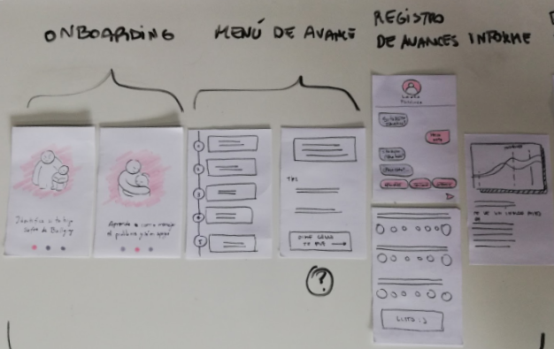
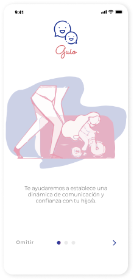
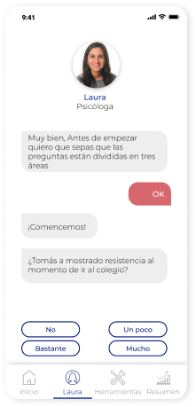
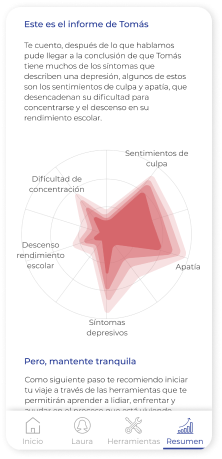
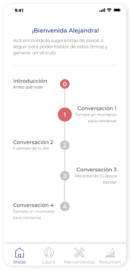
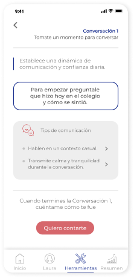
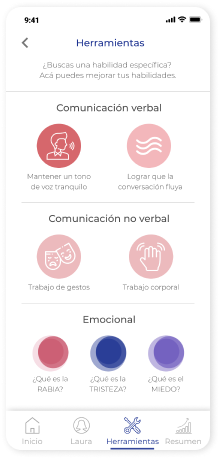

CONTEXTO
Sobre el proyecto
Para este proyecto se trabajó con la Fundación Katy Summer. Como grupo de Diseñadoras UX se nos entregó el desafío de crear una web o aplicación que ayude a combatir el ciberacoso.
Tiempo: 2 semanas
Mi rol: Investigación centrada en el usuario, Diseño de interacción, Prototipado
EL DESAFÍO
¿Cómo podemos aportar en este problema?
Para este proyecto se trabajó con la Fundación Katy Summer. Como grupo ux se nos entregó el desafío de crear una web o aplicación que trate el complicado tema del ciberbullying.
INVESTIGACIÓN
Identificación de Problemas
El foco principal de la investigación fue entender el rol del circulo familiar durante este proceso y los problemas que vive la víctima de ciberacoso. Con el fin de identificar el impacto que pueden producir el apoyo de sus familiares, para entregarles una solución que se adecue a sus problemas.
Web Design
Inteligencia emocional es un amortiguador ante el ciberacoso
Web Design
Los padres o familiares no saben como lidiar con este problema
Web Design
Manuales para padres, son muy teóricos y poco prácticos
Web Design
80% de Aplicaciones para padres son de control parental
USER PERSONA
Entendiendo al usuario
Basandonos en nuestra investigación, creamos un user persona, que representa los problemas que vivían nuestros entrevistados.

INSIGHTS DE LA INVESTIGACIÓN
Enmarcando el problema
Los mayores problemas encontrados son los siguientes:
HOW MIGHT WE?
Definiendo nuestro foco
Despues de entender el problema de la poca información para padres, definimos 3 preguntas que nos ayudarían a desarrollar nuestra propuesta.
IDEACIÓN
Sketching de ideas
Con estas preguntas en mente comenzamos a dibujar nuestras ideas y conceptos para ayudar a los usuarios. Despues de realizar crazy 8 definimos nuestra idea de la siguiente forma.

Etapa de Identificación
Etapa de Implementación
CARACTERÍSTICAS
Definiendo las funcionalidades
Finalmente decidimos que las características principales de nuestra solución propuesta “Guío”
Chatbot
Con una IA simulada con un chatbot que personifica una psicóliga, se podrá identificar el nivel de bullying que sufre el niño
Informes
Un informe del estado emocional del niño, explicado con palabras simples. Este resultado se conecta a las herramientas sugeridas
Herramientas
Herramientas de comunicación para los padres, que se adaptan y actualizan según sus necesidades.
LA SOLUCIÓN
Decisiones de Diseño
Para la primera ronda de prototipado, utilizamos figma y desarrollamos una interacción básica. Después del tener el feedback de los usuarios, hicimos una segunda ronda de prototipado con los cambios sugeridos y algunos cambios en la arquitectura y componentes visuales.

Pantalla de Onboarding

Sección Chat bot
Cuando se abre la aplicación por primera vez se explica brevemente las
características de
esta, a través de Onboarding.
Luego, una vez se inicia sesión, el usuario debe hablar con el chatbot / AI
personificada como la “psicóloga Laura”. Las preguntas son respondidas con
alternativas
mostradas en la parte inferior.

Sección de resumen

Pantalla de inicio
Terminando la conversación con el chatbot, se le muestra el informe que se genera
a partir de sus respuestas.
Posteriormente se le presenta una pauta establecida según sus respuestas. Está
divididas en etapas, permitiendo un avance gradual.

Detalle de etapa

Herramientas comunicacionales
Dentro de cada etapa, se le ejemplifica al padre formas de poder mejorar en esta
etapa. También se les presenta distintos tips que se adecuan a la tarea
establecida.
Para que puedan entender y manejar cada tip, se les entrega además, herramientas
de comunicación, comprensión de las emociones e incluso orientación para
realizar denuncias.
CONCLUSIÓN
Reflexión y próximos pasos
Para mi, este proyecto fue especialmente complejo, debido a la temática que abordaba y a la información muy técnica y excesivamente densa. En relación al proceso iterativo, me di cuenta de lo importante que entregar este tipo de información de una forma amigable y familiar. Al tomar la decisión de ocupar un chatbot que se asemeja mucho a un conversar por mensajes con un amigo, la percepción y recibimiento de la aplicación cambió de forma positiva.
Limitaciones
La mayor limitación que presenta nuestro proyecto sería que la Inteligencia Artificial y el Chat Bot no fueron incorporados en el prototipo, por que le pedimos a los usuarios que imaginaran como si esto les entregara un informe personalizado. Creemos que si estas características se hubieran incorporado, hubiesemos tenido más descubrimientos de problemas que nuestro prototipo pudiera tener. Otra limitación fue el corto tiempo para el desarrollo, por lo que no tenemos un testeo de nuestro prototipo ya iterado.
Discusión Adicional
Puntos que no fueron abordados en este resumen, pero que puede ser interesante discutirlos en persona:
- Selección del perfil de la psicóloga
- Análisis de referentes